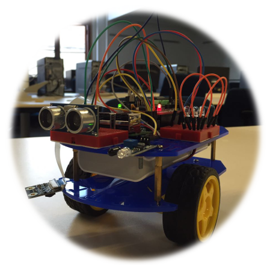

Robot, Movement, and Control - Josh di Bona

Introduction
Over the last few years, robots have not only become a new topic for research and study, but have found use as a modern pedagogical tool. This is seen in the sciences with engineering students learning about the hardware and computer science students using them to learn to program. The use of robots as a pedagogical tool has seen many responses, mostly positive, suggesting that there was an apparent effect of an increase in interest in the concepts being taught, however, there do exist situations where their use wasn't proven to be beneficial or the results were rejected as no validated and widely accepted methods were used to test for any effects that the use of robots had on the students. Whether it be on learning or simply their attitudes towards the material when being taught with robots. The use of robots as a pedagogical tool supports the idea of learning-in-context, where it has been proven to be more effective to teach students, especially the basic concepts in a subject by using a real life example as an educational tool. Computer Science is also fundamentally about problem solving, and the examples shown to students in class or given to students as assignments can profoundly influence how they perceive CS relevance and use-fullness. Therefore, allowing the use of robots to attract those students who had previously been intimidated, excluded or weeded-out of the field.
We have seen the use of robots increase over the years, mainly in the Engineering Department, however not in the Computer Science Department. Given the expense and work required to introduce the use of robots into a new curriculum for CS1, there exists president for further testing and comparisons to the current educational tool being used. This project proposes that robots could be beneficial to learning the basic concepts of computer science by increasing student's motivation to learn, especially in the CSC1010H course, which is an extended degree program of the mainstream CS1 course. Research was done into a few of the previous experiments that had been done in the area as to see what worked and what didn't when introducing robots into the curriculum. In the end it was proposed that a complete Educational Robot Platform would be built, consisting of a robot, built from scratch, by combining different inexpensive parts, which has two wheels and offers a range of movement functions, similar to those provided by the students' current tool used in lectures, Python Turtle.
Robot Design
The robot makes use of the following hardware:
- Magician Chassis
- Raspberry Pi 3
- RaspiRobotBoard
- Romoss 10500mah Powerbank
Software
The Robot Wrapper class provides access to the movement and features module. The Movement module provides the following:
- Contains the robot's movement to grid blocks and makes sure it stays within its enclosure
- Allows for movement in 8 directions
- Provides high-level methods for moving forwards/backwards and rotating
- Has methods which allow the robot to be returned to its start position
- Has methods for pathfinding, allowing the robot to be easily moved around the grid whilst avoiding obstacles
Experimental Methodology
In order to evaluate the robot, testing was done using 7 expert users. The experiment had a group of participants partake, one at a time, in an hour long slot of testing with the robot. The participant was asked to complete a set of assignments relating to a chosen CS concept. Each concept which consisted of Conditionals, While Loops, For Loops and Functions each had a task for each of the 4 sensors on the robot, the Camera, LEDs, Infrared and Ultrasonic.
Before testing is started, each participant completed a set of forms, consisting of an ethics clearance form, and a pre-questionnaire testing motivation of the tool they used to originally learn how to program, or the tool they used to teach the basic concepts of CS to their students. After the assignments were completed, which were done on a laptop using the web-app in the presence of the robot and its enclosure. The participant was given a post-questionnaire testing the motivation of using the robot to learn the basic concepts of CS, as well as three usability surveys (SUS) testing the three separate sections of the project, and a survey about the features section. This routine of testing was conducted twice, week one has the seven participants complete their first round of testing, during week two, the feedback given in the usability surveys and during the testing was implemented, and the second round of testing ran in week three. Participants were given a different set of assignments relating to a new CS concept each round.
The pre and post questionnaire used to measure motivation of the participants is a validated questionnaire created by McGill. The basis of the questionnaire was the Instructional Materials Motivation Survey, which was chosen as the instrument as it was designed to measure whether a media device or tool introduced during instruction for the specific intent of motivating students actually does [1]. The questionnaire is broken up in four separate components, Attention, Relevance, Confidence and Satisfaction (ARCS). The questionnaire has 22 questions in total, with 8 relating to Attention, 5 to Relevance, 7 to Confidence and the last 2 to Satisfaction. Each question is answered by the participant with a Likert Scale on the range of (1-Strongly Disagree, 2-Disagree, 3-Neutral, 4-Agree, 5-Strongly Agree).
When designing the set of tasks which each participant would complete, the goals were to create tasks, for each CS concept with each of the sensors as the main focus, most of them using the movement of the robot in the background. That were as similar to the tasks that any first year in the extended degree program could be given to do when being taught these concepts. The tasks were kept short to allow the user to experience more of the system in such a short amount of time.
Evaluation
The usability surveys were evaluated by calculating a SUS score for each participant, then averaging all the scores for each testing phase. Both rounds of testing were awarded an above average score. The scores were calculated for each survey and an average score calculated for each round of testing. The score after the first round was 87.857% and the score after the second round was 87.917%. So we see a small increase in usability scores, but basically the same, which is good since nothing much had to be changed in terms of the usability of the movement and control section. Two method names were changed, a method removed, a new method added and the wiki made more user friendly.
The table in the section below was calculated for the Motivation questionnaire results, where the average for each question was compared between the pre and post results as well as the averages for each of the 4 components of motivation.
Results
The table below shows the first state of analysis done on the Likert Scale questions and the different components of motivation. A Mean and Standard Deviation value is given for each of the questions (N=7), as well as for the ARCS components themselves. In addition to the mean and standard deviation, the four components also have a p-value which was calculated using a two-sample t-test assuming equal or unequal variances, which was checked using an F-test. All components had equal variance except the Relevance component.An ANOVA (Analysis of Variance) was done between the two sets of average scores for each component, pre and post. ANOVA (F(1,6) = 22.4, p = <0.005). A t-test of the same thing (t(5)=-4.73, two-tail p = 0.005). An ANOVA was then run to test the effects of the independent variable on each of the dependent variables. Attention (F(1,12) = 20.22, p < 0.005). Relevance (F(1,12) = 4.13, p < 0.5). Confidence (F(1,12) = 5.84, p < 0.05). Satisfaction (F(1,12) = 18.69, p < 0.005).

Conclusions
The results found in the analysis of the motivational survey, consisting of the four ACRS components show quite a significant difference. There is a clear increase in overall motivation with a p value of < 0.005. When the components were analyzed separately it was found that there was a more significant increase in the Attention and Satisfaction components, both having p values of < 0.005 whilst the Relevance and Confidence components had p values of <0.5. These results come as expected, from previous papers as well as personal experience from creating this software, the hardware component of the robot does appear to affect the confidence of the participants, because the hardware isn't constant and perfect and sometimes acts up, it occasionally makes you think your code is acting incorrectly while in the meantime it's the hardware. This is an important component as students, especially when they are new to the field and are starting to learn the basic concepts of programming, have to have confidence in the tools they are using. The relevance component has also come up before as you can't expect everyone to be interested in robotics, the ones that aren't that amazed by the idea would see them as irrelevant in learning to program, they might prefer to learn whilst creating applications for a smartphone. However, the system does attempt to abstract the hardware into a high-level language to help the focus of the assignments be on the code rather than the hardware. Allowing the robot to have more visual feedback from the code than other basic tools such as an IDE. A possible solution to the problem with confidence would be to spend money on higher quality parts or have one designed especially from scratch instead of combining different parts.
Even though testing wasn't done with students from the class the system is designed for, the results from testing with expert users, does provide enough confidence that the system works well and isn't worse than what is currently being used. The addition of the web-app seems to have helped a lot by increasing the speed of the write-run-debug loop which Fagin found in his research to be the reason for his poor results [2]. As McGill suggested in her future work, a control group was added [1], and tested against, by comparing the motivation of the robot to something else. This seems to have helped analyze the motivation of the robot more effectively.
Related Downloads
- Robot Controller Code
- Literature review: Josh
- Survey: Robot and robot movements
- Final paper: Robot and robot movements - Josh
References
- [1] - McGill, M. M. 2012. Learning to program with personal robots: Influences on student motivation. ACM Transactions on Computing Education (TOCE), 12, 1 (Jan. 2012), 4.
- [2] - B. S. Fagin and L. Merkle. Quantitative analysis of the e_ects of robots on introductory computer science education. Journal on Educational Resources in Computing (JERIC), 2(4):2, 2002.